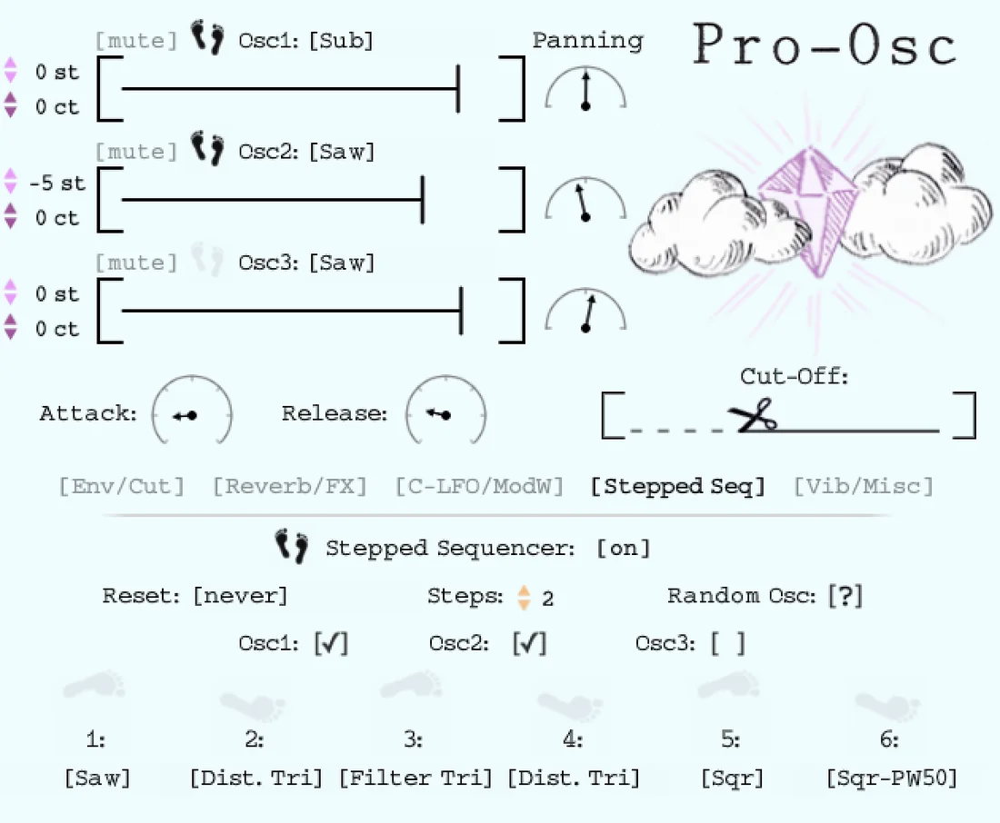

模拟合成器，出自 Osc Collection
Pro‑Osc
复古年代的模拟合成器，采样成一款现代乐器。
取材于一台 Curtis 滤波复古模拟合成器的原始振荡器，再装进手绘的界面。电影般的温暖填满整个房间，83 个手工制作的预置音色没有一个凑数，全都能用调制轮来演奏。
或者五款一起入手：Osc Collection，99 美元。第一次来？免费体验 DEM-Osc。
- 在免费的 Kontakt Player 中运行
- macOS 和 Windows
- 83 个预置音色，没有一个凑数




真实的声音，
直接来自 Pro‑Osc。
四个预置音色和一首完整的曲子。下面的每个声音都只用 Pro-Osc 制作。
点一个声音即可在线播放，无需下载。
看起来很俏皮。等你听到它就知道了。
每个旋钮都是手绘的，而背后的声音来自一台真实的复古模拟合成器，一个波形一个波形地采样，再经过真实的空间。
“这里的声音是认真的……我真的很喜欢。”
内部构造
- 14
波形，一次三个
三个振荡器选择器，每个都有 14 种采样自 Curtis 滤波复古模拟合成器的波形，每个振荡器还有独立的音高和声像。
- 30
内置卷积空间
通过我们最爱的外置混响和 Eurorack 效果做交叉合成：15 个混响和 15 个效果，随时为你的声音做卷积。
- ↻
与众不同的步进音序器
只有音符到来时它才走一步，每个音符换一种载入的波形，让旋律和和弦活起来。
- ∿
截止频率 LFO 和调制轮控制中心
专用的滤波器 LFO，形状丰富；还有一个控制中心，能一次把多个参数映射到调制轮上。
- ≈
颤音、滑音、音高漂移和声像扩展
经典颤音，可调速度和渐入；还有复音滑音、音高漂移和声像扩展，让一切都鲜活、有人味。
看看 Pro‑Osc 的实际表现。
想看详细讲解？观看 Pro-Osc 教程 ↗
包含的全部内容。
主要功能
- 83 个手工制作的预置音色，没有一个凑数
- 14 种波形，采样自 Curtis 滤波的复古模拟合成器
- 30 个定制脉冲响应（15 个混响 + 15 个 Eurorack 效果）
- 音符触发的步进音序器
- 截止频率 LFO、颤音、音高漂移和复音滑音
- 完整支持 NKS：Maschine 和 Komplete Kontrol
系统要求
- 通过 Native Access 安装和下载
- 可在免费的 Kontakt Player（6 及以上）、完整版 Kontakt 6 和 7、Komplete Kontrol 或 Maschine 2 中运行
- macOS 和 Windows
深受制作人喜爱。
- ★★★★★
“弹下第一个和弦时我就说不出话了。终于有了有灵魂的软件合成器，而且声音一流。”
- ★★★★★
“Pro-Osc 满满都是模拟的好味道：丰满温暖的声音，独特得让人想起合成器统治电波的年代。”
- ★★★★★
“真正的模拟声音。图形和设计都是顶级的，预置音色是探索声音的绝佳起点。绝对是用爱做出来的作品。”
Pro-Osc 由 Clay and Kelsy Instruments 出品，这是我们可爱的小软件公司。我们制作自己持续做音乐所需要的乐器和工具。我们的音乐已被播放超过 200 万次，我们的乐器已被下载超过 1 万次。
需要先买 Kontakt 吗？
不需要。Pro-Osc 可在免费的 Kontakt Player（Kontakt 6 或更高版本）中运行，通过 Native Access 安装即可。
支持哪些操作系统？
macOS 和 Windows，并完整支持 NKS，可用于 Maschine 和 Komplete Kontrol。
里面有什么？
三个振荡器，每个有 14 种采样自 Curtis 滤波复古模拟合成器的波形；30 个卷积空间；音符触发的步进音序器；调制轮控制中心；以及 83 个手工制作的预置音色。